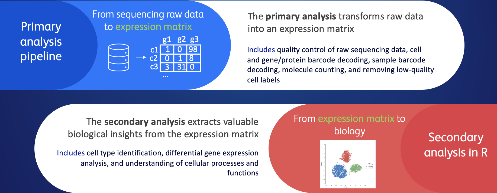
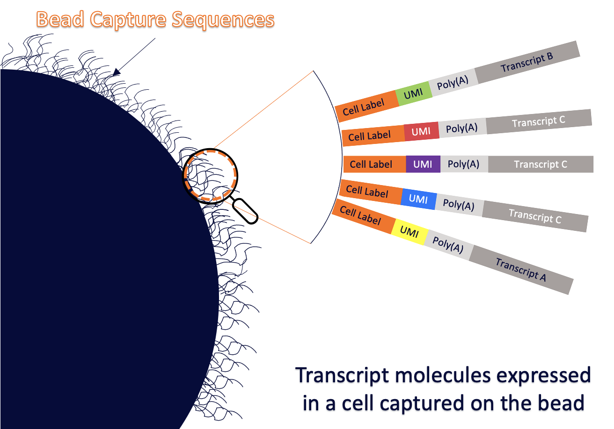
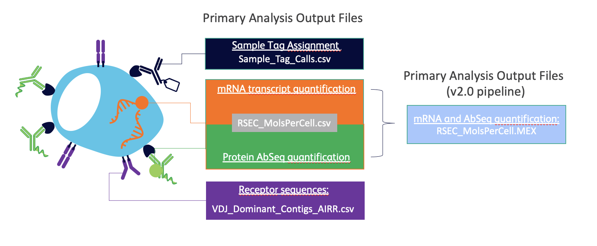

Precourse Preparation - Theory
1. Single Cell Principles
Inside our bodies, there’s a huge variety of cell types that have different functions and interact with each other. Imagine it like a bustling city with different kinds of workers.
To understand these cells better, scientists use single-cell RNA sequencing (scRNA-seq) technique. It’s like taking a close-up picture of each cell to see which genes are active. This helps us learn what each cell is up to in a really detailed way.
This new and advanced technique can be employed to:
Investigating the different types of cells in a specific part of the body. Example: Understanding the various cell types in the brain to study its functions better.
Discovering cell types or states that are not well-known or rare. Example: Identifying unique cell types in the immune system that might have important roles.
Figuring out how genes change their activity as cells transform or over time. Example: Tracking how genes behave as stem cells develop into specialized heart cells.
Spotting genes that are only active in certain cell types under different conditions, like when there’s a disease. Example: Finding genes that are switched on only in lung cells during asthma.
Examining how gene activity changes within a cell type and also consider aspects like where the genes are located, how they’re controlled, and their protein products. Example: Studying how nerve cells in the spinal cord change their gene activity and what proteins they make in response to injury.
2. BD Rhapsody Single - Cell Workflow
The BD Rhapsody™ Express System enables single-cell capture and barcoding of hundreds to thousands of single cells for analysis of genomic and proteomic information.
Before proceeding with Rhapsody workflow, sample of interest is processed to prepare the cells for capture. To focus study on specific population or capture very rare cell types the cell sorting can be added as additional step during experimental procedure.
The sample preparation and experimental set-up is a crucial step and has an impact on quality of the data and analysis.

In the next step the single cells are captured and barcoded in the Rhapsody Single-Cell Analysis System. Each cell is assigned a specific cell barcode and mRNA molecules are tagged, which helps to identify the origin of the RNA molecules within that cell.
The data analysis and interpretation comes as the last piece of the full workflow. The upstream steps, including experimental design and sample processing will define the analysis process, for example, how we approach quality control, the data integration or cell annotation.
In next chapter you will learn what types of data can be measured on the single-cell level in the BD Rhapsody™ System.
2.1 BD Rhapsody Single-Cell Assays

The BD Rhapsody™ System, along with diverse range of assays, enables simultaneous measurement of multiple cell parameters across tens of thousands of individual cells in parallel. By combining available assays, researchers can generate robust and intricate datasets, unlocking powerful insights:
Gene Expression: The primary purpose of scRNA-seq is to measure the expression of genes within individual cells. This allows to understand which genes are active or inactive in each cell and to identify different cell types based on their gene expression profiles.
Antibody-Based Protein Analysis: You can use antibodies conjugated with unique barcodes to simultaneously measure the expression of specific proteins in individual cells. This enables protein-level analysis alongside gene expression.
Sample multiplexing with antibody-based techniques: involves using generic antibody conjugated with unique barcodes to label the cells for different samples. Each sample is labeled and idenfied with unique antibody barcode.
Immune Repertoire Profiling: Rhapsody can be used for immune profiling, allowing researchers to analyze the diversity and clonality of T-cell and B-cell receptor repertoires. This is valuable for studying the immune response and identifying antigen-specific cells.
Antigen-Specific T-cell Analysis: Immudex’s technology combined with the Rhapsody system, enables the precise profiling of T cells that recognize specific antigens, like viral epitopes or tumor-related antigens. This expands immune profiling possibilities, aiding vaccine development, immunotherapy research, and the study of immune-related diseases.
From scRNA-seq for gene expression profiling to antibody-based protein analysis, these assays empower researchers to explore and dissect the multifaceted world of cellular functions and molecular dynamics with precision
2.2 Analysis of Single Cell Data
The analysis of single cell data can be split into two parts. The primary analysis transforms raw data into an expression matrix, where each row represents a gene, each column represents a cell, and each entry in the matrix contains the count of molecules for a particular gene or protein in a specific cell. Secondary analysis focus on extracting meaningful biological insights from this expression matrix, such as identifying cell types, studying differential gene expression, and understanding cellular processes and functions.

The workshop will focus on providing insights into secondary analysis. At the same time the primary analysis lays the foundation for secondary and downstream analyses. The next chapter covers information about primary analysis useful to know while working with single-cell data.
2.3 From Sequencing Data to Expression Matrix
The analysis of sequencing data is handled by the software provided by BD to Rhapsody users that enables fast and easy data processing. In this chapter we will cover a key features of the pipeline and explain key concepts necessary to understand while working with single cell data.
2.3.1 BD Rhapsody Sequencing Analysis Pipeline
The BD Rhapsody sequencing analysis pipeline is a series of computational and analytical steps used to process and extract meaningful information from the raw sequencing data generated by the BD Rhapsody system.
The goal of sequencing analysis is to transform text-based genomic data into numerical data, and we achieve this through a series of steps in our pipeline. The steps of the pipeline are listed in simplified graphics below.

The main steps of the pipeline include quality control of raw sequencing data, molecule counting, identifying the putative cells and sample of origin if multiple samples were processed in one experiment.
Crucial Steps in the process are decoding the unique barcodes associated with individual cells and the information about gene expression. Additionally, we use a technique called Unique Molecular Identifiers (UMIs) to count gene expression accurately. These steps enable us to precisely identify and quantify the activity of genes in each cell, forming the basis for further analysis.
2.3.2 Expression Counts by UMIs
Unique Molecular Identifiers (UMIs) are used to distinguish between molecules expressed in a cell by providing a way to count individual molecules accurately. Here’s how they work to differentiate and quantify molecules in a cell:
Adding UMIs during RNA sequencing preparation: UMIs are small, unique sequences of DNA that are added to the capture sequences of the bead during the production. Each bead contains tens of thousands of unique UMI barcodes which are followed by the polyA capture sequence. During the cell processing, the polyadenylated molecules in a cell, as mRNAs are captured on the bead. Each UMI is specific to the molecule it’s attached to and become it’s unique tag (see Figure below).

Creating copies of RNA molecules: After adding UMIs, scientists make many copies of all the RNA molecules in the cell by running PCR. This step ensures that there are enough copies to work with.
Sequencing the molecules: The copies of RNA molecules, including the attached UMIs, are then sequenced. Sequencing means reading the genetic code of these molecules to determine their identity.
Analyzing the data: When the sequencing is done, scientists look at the data. Here’s where UMIs become important:
Removing duplicates: Because UMIs are unique to each original RNA molecule, any duplicates (multiple copies of the same RNA molecule) with the same UMI are likely the result of PCR (Polymerase Chain Reaction) amplification during the sequencing process. Scientists can identify and remove these duplicates to get an accurate count of different RNA molecules.
Counting unique molecules: By looking at the UMIs, scientists can count how many unique RNA molecules were originally present in the cell. This helps them understand which genes were active in the cell and to what extent.
Quantifying gene expression: By counting the unique UMIs associated with each gene, scientists can measure the expression level of genes in the cell. Genes with more UMIs were more active in the cell, while genes with fewer UMIs were less active.
In summary, UMIs are used to distinguish between molecules expressed in a cell by providing a unique identifier for each original molecule. This helps in accurately counting and quantifying gene expression, which is crucial for understanding how genes function in single cells and studying cellular processes in detail.
2.3.3 Output Files
We handle various types of data all at once during primary analysis. This includes data related to gene expression at first but can include as well protein expression or information about T-cell receptors (TCR), B-cell receptors (BCR), and sample tags depending on experimental part. The assays run during experiments determine what type of data will be generated and what output files are available for the users for downstream analysis.
The information about cells is stored in multiple output files. In below you can find summary of what output files relates to which information about the cell.

The primary analysis output files are taken as an input to secondary analysis. During the workshop we will work with data that include mRNA, protein and sample tag information. You will get to know how to load the expression matrice in MEX format for downstream analysis.